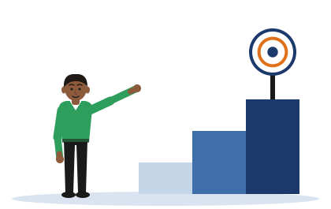

One Aim, Three Objectives
[Illustrative example - do not cite] Chathura and Pahana Retail are invented, and so are the two reworded aims.
One idea
A project has one aim. Its objectives are different, measurable steps, in order, that together deliver the aim. An objective is never the aim in other words.

Part 1. Aim, objective, or the aim again?
Six statements about Chathura's project. One is his aim. Three are his objectives. Two are the aim said again in other words. Decide what each one is.
Part 2. Put the objectives in order
The three objectives are steps. Move them into the order in which Chathura must do them. Then check.